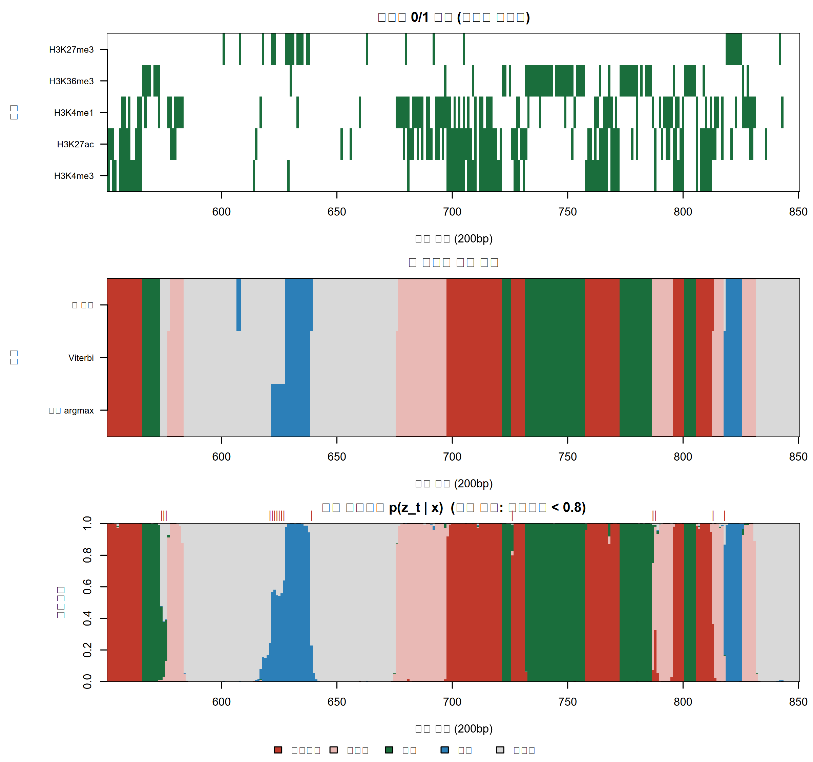
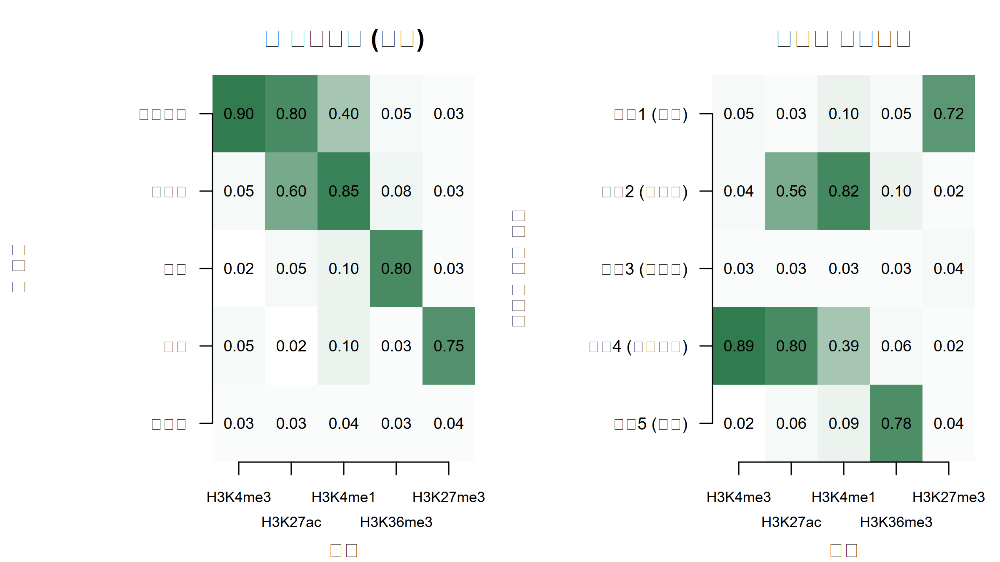

히스톤 표지의 0/1 조합에서 숨은 염색질 상태를 추정합니다. forward–backward와 Viterbi를 직접 구현하고, 사전분포를 더한 Baum–Welch로 ChromHMM의 아이디어를 재현합니다.
Author
Eunji Ha
Published
September 21, 2026
학습 목표
은닉 마르코프 모형의 세 부품(초기확률, 전이행렬, 방출확률)을 염색질 상태 문제에 맞춰 설명할 수 있다.
척도화한 forward–backward와 로그 공간 Viterbi를 base R로 구현하고, 작은 예에서 모든 경로를 나열한 결과와 같음을 확인할 수 있다.
forward–backward가 계산하는 값이 숨은 상태의 사후분포임을 설명하고, 사후 주변확률의 argmax와 Viterbi 경로를 구분할 수 있다.
사전분포(의사카운트)를 더한 Baum–Welch(MAP-EM)로 모수를 학습하고, 라벨 교환을 처리한 뒤 학습된 상태에 이름을 붙일 수 있다.
표지 다섯 개로 유전체에 주석 달기
한 세포주에서 히스톤 표지 다섯 개의 ChIP-seq을 했다고 합시다. H3K4me3는 활성 프로모터, H3K27ac는 활성 프로모터와 인핸서, H3K4me1은 인핸서, H3K36me3는 전사되는 유전자 몸체, H3K27me3는 Polycomb 억제 영역에 주로 붙습니다. 유전체를 200bp 구간(bin)으로 나누고 구간마다 신호가 배경보다 뚜렷이 높으면 1, 아니면 0으로 이진화(binarization)하면, 30억 염기쌍이 약 1500만 개의 5비트 패턴이 됩니다. 알고 싶은 것은 각 구간이 프로모터·인핸서·전사·억제·비활성(quiescent) 중 어떤 상태인가입니다. 어려움은 두 가지입니다. 상태는 직접 관측되지 않고 패턴에는 잡음이 섞여 있습니다. 인핸서라도 우연히 H3K27ac가 0으로 나올 수 있습니다. 그리고 이웃 구간은 상태가 이어지는 경향이 있습니다. 프로모터는 몇 kb, 전사 영역은 수십 kb에 걸칩니다.
은닉 마르코프 모형(hidden Markov model, HMM)은 이 두 사실을 그대로 모형으로 옮깁니다. ChromHMM(Ernst & Kellis 2010, 2012)이 바로 이 모형이고, Roadmap Epigenomics Consortium(2015)은 이것으로 111개 참조 후성유전체(reference epigenome)에 상태 주석을 달았습니다. 이번 주는 그 계산을 base R로 처음부터 만듭니다. 알고리즘의 고전적 해설은 Rabiner(1989)와 Durbin 등(1998)의 Biological Sequence Analysis에 있습니다.
은닉 마르코프 모형의 세 부품
숨은 상태(hidden state) \(z_t \in \{1,\dots,K\}\)가 구간 \(t=1,\dots,T\)를 따라 마르코프 사슬로 움직이고, 각 구간은 자기 상태에 따라 관측 \(x_t\)를 내놓습니다(방출, emission). 부품은 세 개입니다.
초기확률\(\pi_k = p(z_1 = k)\).
전이행렬(transition matrix)\(A_{jk} = p(z_t = k \mid z_{t-1} = j)\). 행 합이 1이고, 대각원소(자기전이)가 크면 상태가 오래 이어집니다.
방출확률\(\theta_{km} = p(x_{tm} = 1 \mid z_t = k)\). ChromHMM은 상태가 주어지면 표지들이 서로 독립이라고 보고 베르누이의 곱(다변량 베르누이)을 씁니다. 프로모터 상태라면 H3K4me3의 \(\theta\)가 0.9, H3K36me3의 \(\theta\)가 0.05인 식입니다.
가능도 \(p(x_{1:T})\)는 가능한 모든 상태 경로에 대해 “경로의 확률 × 그 경로에서 관측의 확률”을 더한 값입니다. 상태 2개(활성·비활성), 표지 1개(H3K27ac), 구간 3개인 장난감 예로 직접 나열해 봅니다.
“활성-활성-비활성”이 가장 그럴듯한 경로이지만 사후확률은 0.466이고, “활성-활성-활성”(0.414)과 큰 차이가 없습니다. 두 번째 구간이 활성일 사후확률은 0.908입니다. 경로가 8개일 때는 이렇게 더하면 되지만 경로 수는 \(K^T\)입니다. 상태 15개, 구간 1500만 개면 \(15^{15{,}000{,}000}\)개입니다. 다행히 경로들은 앞부분을 공유합니다. \(t\)번째 구간까지의 합을 상태별로 모아 두면 다음 구간으로 넘어갈 때 \(K \times K\) 곱셈만 하면 되고, 전체 비용은 \(O(TK^2)\)가 됩니다. 이것이 전방 알고리즘(forward algorithm)입니다.
수식으로 보기: 결합확률과 가능도
\[ p(x_{1:T}, z_{1:T}) = \pi_{z_1}\, e_1(z_1) \prod_{t=2}^{T} A_{z_{t-1} z_t}\, e_t(z_t), \qquad e_t(k) = \prod_{m=1}^{M} \theta_{km}^{\,x_{tm}} (1-\theta_{km})^{1-x_{tm}}, \qquad p(x_{1:T}) = \sum_{z_{1:T}} p(x_{1:T}, z_{1:T}) \]\(M\)은 표지 수, \(e_t(k)\)는 구간 \(t\)가 상태 \(k\)일 때 관측 패턴의 확률(방출)입니다. 마지막 합은 \(K^T\)개 경로 전체에 대한 것입니다.
전방·후방 알고리즘: 숨은 상태의 사후분포
전방 변수 \(\alpha_t(k) = p(x_{1:t}, z_t = k)\)는 “구간 \(t\)까지의 관측을 보고, 지금 상태가 \(k\)일 확률”입니다. 반대 방향의 후방 변수 \(r_t(k) = p(x_{t+1:T} \mid z_t = k)\)는 “지금 상태가 \(k\)라면 오른쪽 관측이 나올 확률”입니다. Part 1에서 \(\beta\)를 로짓 스케일 모수로 썼으므로 교과서의 \(\beta_t(k)\) 대신 \(r_t(k)\)라고 부르겠습니다. 둘을 곱해 정규화한 \(\gamma_t(k) = p(z_t = k \mid x_{1:T}) = \alpha_t(k)\, r_t(k) / p(x_{1:T})\)는 모수 \((\pi, A, \theta)\)가 주어졌을 때 숨은 상태의 사후분포입니다. 마르코프 사슬 \(p(z_{1:T})\)가 경로에 대한 사전분포이고 방출 \(p(x \mid z)\)가 가능도이므로, 구조는 W1의 베이즈 정리 그대로입니다. 다른 점은 합해야 할 경로가 천문학적으로 많다는 것뿐이고, forward–backward는 그 합을 정확히 계산하는 방법입니다.
Tip
구간 하나의 사후확률은 양쪽 이웃의 증거를 모두 씁니다. H3K27ac 하나만 1인 애매한 구간이라도 좌우 구간들이 인핸서처럼 보이면 인핸서일 사후확률이 올라갑니다. 전이행렬이 “이웃은 비슷하다”는 사전 믿음이고, 자기전이가 클수록 이웃의 증거를 더 많이 빌려 옵니다. W7의 부분 통합이 다른 그룹의 정보를 빌리던 것과 같은 성격입니다.
확률을 수천 번 곱하면 \(10^{-300}\) 아래로 떨어져 0이 됩니다(언더플로). 그래서 매 구간 전방 변수를 그 합 \(c_t\)로 나눠 정규화하고, 나눈 상수의 로그를 모아 로그가능도를 얻습니다. 이 척도화(scaling)가 수치 구현의 핵심입니다.
구간마다 사후확률이 가장 큰 상태를 고르는 것(사후 argmax)과, 경로 전체의 결합 사후확률이 가장 큰 하나의 경로를 고르는 것(Viterbi)은 다른 질문입니다. 장난감 예에서는 두 답이 “활성-활성-비활성”으로 같지만 일반적으로는 다를 수 있습니다. Viterbi 알고리즘은 전방 알고리즘의 합을 최댓값으로 바꾸고, 어느 이전 상태에서 왔는지 기록했다가 끝에서 거꾸로 따라갑니다. 곱의 최댓값을 다루므로 로그 공간의 덧셈으로 계산합니다.
사후 argmax 경로는 “경로”가 아닐 수 있습니다. 구간별로 따로 고른 상태를 이어 붙인 것이라, 전이확률이 0인 이동이 끼어 결합확률이 0인 경로가 나올 수도 있습니다(Rabiner 1989). 반대로 Viterbi 경로는 최빈값 하나일 뿐이라 그 경로의 사후확률 자체는 대개 아주 작고, 구간별 불확실성을 전혀 알려 주지 않습니다. 맞힌 구간 수의 기댓값을 최대화하려면 사후 argmax, 일관된 분절(segmentation)이 필요하면 Viterbi를 쓰고, 어느 쪽이든 경계 근처의 불확실성은 \(\gamma_t(k)\)로 따로 보고해야 합니다.
학습: Baum–Welch는 EM이다
지금까지는 모수를 안다고 가정했습니다. 상태를 알면 모수는 세기만 하면 되고(프로모터 구간 중 H3K4me3가 1인 비율), 모수를 알면 상태의 사후분포를 구할 수 있습니다. 이 순환을 반복하는 것이 Baum–Welch 알고리즘이고, 기댓값 최대화(expectation–maximization, EM; Dempster, Laird & Rubin 1977)의 HMM판입니다. E-단계는 forward–backward로 \(\gamma_t(k)\)와 \(\xi_t(j,k)\)를 구하고, M-단계는 이 사후확률을 “소수점 카운트”로 써서 비율을 다시 계산합니다.
순수한 최대가능도(MLE)에는 약점이 있습니다. 어떤 상태에 배정된 구간이 12개뿐이고 그 12개 모두 H3K4me3가 1이면 MLE는 \(\hat\theta = 12/12 = 1\)이고, H3K4me3가 0인 구간은 그 상태일 확률이 정확히 0이 됩니다. W2의 베타–이항 켤레가 해법입니다. 방출확률에 \(\text{Beta}(1+\lambda, 1+\lambda)\), 초기확률과 전이행렬의 각 행에 \(\text{Dirichlet}(1+\lambda, \dots, 1+\lambda)\) 사전분포를 주고 사후 최빈값(MAP)을 구하면, M-단계에서 기대 카운트에 의사카운트(pseudocount)\(\lambda\)를 더하기만 하면 됩니다. \(\lambda = 1\)이면 위 예는 \((12+1)/(12+2) = 0.929\)입니다. 이 MAP-EM에서도 로그사후(로그가능도 + 로그사전)는 반복마다 감소하지 않지만, 전역 최적은 보장되지 않습니다. 초기값에 따라 다른 국소 최적(local optimum)에 멈추므로 여러 초기값에서 돌려 로그사후가 가장 큰 것을 고릅니다.
수식으로 보기: MAP-EM의 M-단계
\[ \hat A_{jk} = \frac{\sum_{t=1}^{T-1} \xi_t(j,k) + \lambda}{\sum_{t=1}^{T-1} \sum_{k'} \xi_t(j,k') + K\lambda}, \qquad \hat\theta_{km} = \frac{\sum_{t} \gamma_t(k)\, x_{tm} + \lambda}{\sum_t \gamma_t(k) + 2\lambda}, \qquad \hat\pi_k = \frac{\gamma_1(k) + \lambda}{1 + K\lambda} \]\(\text{Beta}(a,b)\) 사전에 (기대) 카운트 \(n\)번 중 \(s\)번을 더한 사후 \(\text{Beta}(s+a,\, n-s+b)\)의 최빈값이 \((s + a - 1)/(n + a + b - 2)\)이므로 \(a = b = 1+\lambda\)에서 가운데 식이 되고, \(\text{Dirichlet}(1+\lambda, \dots)\)의 최빈값도 같은 방식으로 첫째·셋째 식을 줍니다. 반복마다 \(\log p(x \mid \pi, A, \theta) + \log p(\pi, A, \theta)\)가 감소하지 않습니다. \(\lambda = 0\)이면 보통의 Baum–Welch(MLE)입니다.
실습: base R로 직접 구현
(1) 가상의 데이터
아래는 가상의 데이터입니다. 상태 5개, 표지 5개, 구간 3000개(200bp 기준 600kb)를 만듭니다. 방출확률은 앞에서 말한 생물학적 경향만 흉내 낸 값이고, 자기전이는 0.90~0.97로 끈적하게(sticky) 둡니다.
Viterbi가 97.7%, 사후 argmax가 97.5%를 맞혔습니다. 이번 실현에서는 Viterbi가 조금 더 맞혔지만, 모형이 스스로 예상한 정확도(사후확률의 평균)는 사후 argmax가 0.9775로 Viterbi의 0.9767보다 큽니다. 사후 argmax는 맞힌 구간 수의 기댓값을 최대화하는 규칙이라, 한 번의 실현에서는 이렇게 뒤집힐 수 있습니다. 오류는 주로 전사·억제·인핸서가 비활성과 뒤섞이는 경우입니다. 조각 가장자리에서 표지가 우연히 전부 0으로 나오면 비활성과 구분하기 어렵기 때문입니다. H3K27ac를 함께 가진 프로모터와 인핸서 사이의 혼동(프로모터 → 인핸서 9개)이 그다음입니다. 사후 최대확률이 0.8 미만인 불확실한 구간은 전체의 4.3%입니다.
(4) 트랙 그림: 유전체 브라우저처럼 300개 구간 보기
state_col <-c("#c0392b", adjustcolor("#c0392b", alpha.f =0.35), "#1a6e3c", "#2c7fb8", "grey85")idx <-551:850; xlab_bin <-"구간 번호 (200bp)"; par(mfrow =c(3, 1), mar =c(4, 8, 2.5, 1), oma =c(2, 0, 0, 0))image(idx, 1:n_mark, x[idx, ], col =c("white", "#1a6e3c"), yaxt ="n",main ="표지의 0/1 신호 (가상의 데이터)", xlab = xlab_bin, ylab ="")axis(2, at =1:n_mark, labels = marks, las =1, cex.axis =0.8); title(ylab ="표지", line =6.5)image(idx, 1:3, cbind(post_max[idx], vit[idx], z_true[idx]), col = state_col, breaks =0:n_state +0.5,yaxt ="n", main ="참 상태와 해독 결과", xlab = xlab_bin, ylab ="")axis(2, at =1:3, labels =c("사후 argmax", "Viterbi", "참 상태"), las =1, cex.axis =0.8); title(ylab ="경로", line =6.5)plot(NA, xlim =range(idx) +c(-0.5, 0.5), ylim =c(0, 1), xaxs ="i", yaxs ="i", xlab = xlab_bin, ylab ="사후확률",main ="사후 상태확률 p(z_t | x) (빨간 눈금: 최대확률 < 0.8)")cum <-t(apply(fb$post[idx, ], 1, cumsum)) # 상태별 누적 사후확률 -> 쌓은 막대rect(rep(idx -0.5, n_state), cbind(0, cum[, -n_state]), rep(idx +0.5, n_state), cum,col =rep(state_col, each =length(idx)), border =NA)unc <- idx[max_prob[idx] <0.8]; points(unc, rep(1.05, length(unc)), pch ="|", col ="#c0392b", xpd =NA)par(fig =c(0, 1, 0, 1), oma =c(0, 0, 0, 0), mar =c(0, 0, 0, 0), new =TRUE) # 범례 전용 겹칠 층plot(0, 0, type ="n", bty ="n", xaxt ="n", yaxt ="n", xlab ="", ylab ="")legend("bottom", legend = states, fill = state_col, horiz =TRUE, bty ="n", cex =0.9)

사후확률 막대는 조각 내부에서는 한 색으로 꽉 차 있고 경계에서만 여러 색이 섞입니다. 빨간 눈금이 몰리는 곳이 불확실한 경계이며, 이 정보는 Viterbi 경로 한 줄에서는 보이지 않습니다.
(5) Baum–Welch: 모수를 모를 때
이제 참 모수를 버리고 데이터만으로 학습합니다. 방출 초기값은 무작위, 전이 초기값은 자기전이 0.9로 두고, 의사카운트 \(\lambda = 1\)을 씁니다. 초기값 네 개에서 각각 돌립니다.
네 번 모두 로그사후가 단조 증가했지만 도착점은 모두 달랐습니다. seed 4만 20회 만에 수렴해 가장 높은 값(-4465.3)에 도달했고, 나머지는 40회가 지나도 250 이상 낮은 곳에 머뭅니다. 출력한 seed 3의 방출확률을 보면 H3K36me3가 높은 상태가 셋(1, 3, 4행)으로 쪼개졌고, 프로모터와 인핸서가 한 상태(5행)로, 억제와 비활성이 한 상태(2행)로 뭉쳐 있습니다. 전역 최적 보장이 없으므로 초기값 여러 개는 선택이 아니라 필수입니다. 한편 처음 400구간만으로 학습한 MLE에서는 방출확률 하나가 \(10^{-20}\) 수준으로 무너졌습니다(MAP의 최솟값은 0.0185). 그 상태에서 해당 표지가 한 번이라도 1로 나오면 그 구간은 사실상 그 상태가 될 수 없습니다. 의사카운트는 이 붕괴를 막는 가장 값싼 사전분포입니다.
(6) 상태에 이름 붙이기와 라벨 교환
학습된 상태의 번호는 아무 의미가 없습니다. 상태 1과 상태 3의 이름을 맞바꿔도 가능도가 똑같기 때문입니다(라벨 교환, label switching). ChromHMM도 비지도 학습 뒤 사람이 방출 히트맵을 보고 “H3K4me3와 H3K27ac가 높으니 활성 프로모터”처럼 이름을 붙입니다. 여기서는 참 방출행렬을 알고 있으므로, 5! = 120개 순열 중 제곱거리가 가장 작은 것으로 짝지은 뒤 정확도를 잽니다.
all_perms <-function(n) { # 1..n 의 모든 순열 (n! x n 행렬)if (n ==1) return(matrix(1L)); p <-all_perms(n -1)do.call(rbind, lapply(1:n, function(i) cbind(i, p + (p >= i))))}perm <-all_perms(n_state)cost <-apply(perm, 1, function(pm) sum((best$emis[pm, ] - emis_true)^2)) # 학습 상태 pm[k] <-> 참 상태 kmatch_k <- perm[which.min(cost), ]to_true <-integer(n_state); to_true[match_k] <-1:n_state # 학습 번호 -> 참 번호vit_hat <-viterbi(bern_log_emis(x, best$emis), best$trans, best$init)cat("학습 상태 1~5의 이름:", states[to_true], sprintf("\n정확도: 번호 그대로 %.3f / 짝지은 뒤 %.3f\n",mean(vit_hat == z_true), mean(to_true[vit_hat] == z_true)))
학습 상태 1~5의 이름: 억제 인핸서 비활성 프로모터 전사
정확도: 번호 그대로 0.132 / 짝지은 뒤 0.974
print(round(rbind(true =setNames(diag(trans_true), states), learned =diag(best$trans)[match_k]), 3)) # 자기전이 비교 (참 상태 순서)
draw_heat <-function(mat, ylabs, main) { # 상태(행) x 표지(열), 첫 행이 맨 위image(1:n_mark, 1:n_state, t(mat[n_state:1, ]), col =colorRampPalette(c("white", "#1a6e3c"))(50),zlim =c(0, 1), axes =FALSE, main = main, xlab ="표지", ylab ="")axis(1, at =1:n_mark, labels =FALSE); axis(2, at = n_state:1, labels = ylabs, las =1, cex.axis =0.8)mtext(marks, side =1, at =1:n_mark, line =rep(c(0.8, 1.8), length.out = n_mark), cex =0.7) # 두 줄로 엇갈려 표기text(rep(1:n_mark, each = n_state), rep(n_state:1, n_mark), sprintf("%.2f", mat), cex =0.75)}par(mfrow =c(1, 2), mar =c(4, 8.5, 3, 1))draw_heat(emis_true, states, "참 방출확률 (가상)"); title(ylab ="참 상태", line =7.3)draw_heat(best$emis, paste0("상태", 1:n_state, " (", states[to_true], ")"), "학습된 방출확률"); title(ylab ="학습된 상태 번호", line =7.3)

학습된 번호를 그대로 참 상태와 비교하면 정확도가 0.132로 무의미하지만, 방출 패턴으로 짝지으면 0.974로 참 모수를 쓸 때(0.977)와 거의 같습니다. 자기전이는 참값보다 조금 작게(0.885~0.964) 추정됐습니다. 오른쪽 히트맵의 행 순서는 왼쪽과 다르지만 각 행의 패턴은 한눈에 대응됩니다. 실제 데이터에서는 참 행렬이 없으므로 이 짝짓기를 표지에 대한 생물학적 지식으로 합니다. 세포형마다 따로 학습하면 상태 번호가 서로 달라지므로, ChromHMM처럼 여러 세포형 자료를 이어 붙여 한 모형을 학습하는 것이 비교에 유리합니다.
상태 수 K 고르기
K는 사용자가 정합니다. BIC(모수 수 \(d = K(K-1) + KM + (K-1)\))를 쓸 수는 있지만, 구간이 수백만 개이면 모형 가정이 조금만 어긋나도 상태를 늘려 그 어긋남을 흡수하는 가능도 이득이 벌점보다 커질 수 있습니다. 이웃 구간이 독립이 아니어서 BIC의 표본 크기를 무엇으로 볼지도 애매합니다. 그래서 ChromHMM을 쓰는 연구는 보통 여러 K로 학습한 뒤, 상태들의 방출 패턴이 서로 겹치지 않고 생물학적으로 해석 가능한 K를 고릅니다. Ernst & Kellis(2010)는 CD4+ T 세포의 수십 개 표지로 51개 상태를 학습했고, Roadmap Epigenomics Consortium(2015)은 핵심 표지 5개(H3K4me3, H3K4me1, H3K36me3, H3K27me3, H3K9me3)로 15-상태 핵심 모형(core model)을 학습해 모든 참조 후성유전체에 같은 상태 이름을 달았습니다.
Warning
HMM이 몰래 하는 가정들.
표지 간 조건부 독립. 같은 상태 안에서도 H3K4me3와 H3K27ac는 함께 움직이는 경향이 있습니다. 모형은 이 상관을 설명하려고 상태를 더 잘게 쪼갤 수 있습니다. 새 상태가 생물학적 구분인지 가정 위반의 흔적인지 따져야 합니다.
기하분포 지속시간. 자기전이가 \(a\)면 한 조각의 길이는 \(p(d) = a^{d-1}(1-a)\), 평균 \(1/(1-a)\) 구간입니다. \(a=0.9\)면 평균 10구간(2kb), \(a=0.97\)이면 약 33구간입니다. 이 분포는 길이 1에서 가장 크고 단조 감소하므로 “대략 몇 kb”라는 전형적 길이를 표현하지 못합니다. 이를 풀려면 지속시간 분포를 따로 두는 반마르코프(semi-Markov) 모형이 필요합니다.
이진화 문턱값. 0/1은 문턱값과 시퀀싱 깊이에 따라 달라지고 상태 정의도 따라 움직입니다. 깊이가 다른 두 시료의 상태 차이가 생물학이 아니라 이진화의 차이일 수 있습니다.
라벨 교환과 모수 불확실성. 상태 번호는 실행마다 바뀝니다. 또 여기서 구한 \(\gamma_t(k)\)는 학습된 모수를 참값처럼 꽂아 넣은 것이라 모수 추정의 불확실성이 빠져 있습니다. W7의 경험적 베이즈와 같은 성격입니다.
실습: 패키지로 풀기
CI 환경에 패키지가 없어 실행하지 않습니다. CRAN의 HMM 패키지는 시점마다 기호 하나만 방출하므로, 표지 5개의 0/1 조합을 \(2^5 = 32\)개 기호로 인코딩합니다. 방출행렬을 베르누이의 곱으로 채우면 위 모형과 같지만, baumWelch()로 학습하면 32개 기호의 범주형 방출(상태마다 모수 31개)을 추정하므로 조건부 독립 가정이 없는 더 큰 모형이 됩니다.
library(HMM)sym <-as.character(x %*%2^(0:4) +1) # 0/1 패턴 -> 기호 "1"~"32"all_x <-as.matrix(expand.grid(rep(list(0:1), n_mark))) # 기호 s 의 0/1 패턴 (s = 1..32)emis_sym <-t(exp(bern_log_emis(all_x, emis_true))) # K x 32, 베르누이의 곱hmm0 <-initHMM(States = states, Symbols =as.character(1:32), startProbs = init_true,transProbs = trans_true, emissionProbs = emis_sym)vit_pkg <- HMM::viterbi(hmm0, sym); post_pkg <- HMM::posterior(hmm0, sym) # 상태 이름 벡터, 상태 x 시점 행렬bw <-baumWelch(hmm0, sym, maxIterations =50, pseudoCount =1); round(bw$hmm$transProbs, 3)
ChromHMM 자체는 Java 명령행 도구입니다. 먼저 BinarizeBam으로 BAM 파일을 200bp 구간의 0/1로 이진화하고, LearnModel에 상태 수(여기서는 15)를 주어 학습합니다. 학습 결과로 방출·전이 행렬 그림과 구간별 상태(segments) BED 파일이 나옵니다. cellmarkfiletable.txt는 세포형·표지·파일 이름을 탭으로 구분한 표이고, 염색체 길이 파일은 ChromHMM 배포본의 CHROMSIZES 폴더에 있습니다.
자기전이가 0.5면 이웃 정보를 거의 빌리지 않아 잡음 하나하나에 반응하고, 조각이 494개로 부서지며 정확도도 0.905로 떨어집니다. 반대로 0.999면 짧은 프로모터·인핸서 조각을 주변 상태에 흡수해 조각 수가 127개로 참값(155개)보다 크게 줄고 정확도도 0.971로 내려갑니다. 이 데이터에서는 0.97 부근이 가장 좋았습니다. 자기전이는 “상태가 얼마나 오래 이어진다고 믿는가”라는 사전분포입니다.
문제 3. 사후 argmax와 Viterbi가 갈리는 곳
실습 (3)의 vit과 post_max가 다른 구간을 찾고, 두 경로의 결합 로그확률 \(\log p(x, z)\)를 비교하십시오.
풀이
path_logprob <-function(path, log_emis, trans, init) { # log p(x_1:T, z_1:T) n_t <-length(path)log(init[path[1]]) +sum(log(trans[cbind(path[-n_t], path[-1])])) +sum(log_emis[cbind(1:n_t, path)])}diff_bin <-which(vit != post_max)cat("다른 구간 수:", length(diff_bin), "/ 그 구간의 평균 사후 최대확률:", round(mean(max_prob[diff_bin]), 3), "\n")
두 경로는 19개 구간에서 갈리고, 그 구간들의 평균 사후 최대확률은 0.539로 모형이 거의 반반으로 망설이는 곳입니다. 첫 번째로 갈리는 200번 구간은 참 상태가 전사(3)인데, 사후 argmax는 전사를, Viterbi는 앞 구간들과 이어지는 비활성(5)을 골랐습니다. 결합 로그확률은 정의상 Viterbi(-4368.0)가 사후 argmax 경로(-4386.8)보다 큽니다. 사후 argmax 경로는 구간별로는 최선이지만 경로 전체로 보면 더 드문 조합입니다.
정리
HMM은 숨은 상태의 마르코프 사슬(초기확률 \(\pi\), 전이행렬 \(A\))과 상태별 방출(\(\theta\))로 이루어집니다. ChromHMM은 200bp 구간의 이진화된 표지를 베르누이의 곱으로 방출합니다.
forward–backward는 \(K^T\)개 경로의 합을 \(O(TK^2)\)로 계산하며, 결과 \(\gamma_t(k) = p(z_t = k \mid x)\)는 모수가 주어졌을 때 숨은 상태의 사후분포입니다. 척도화로 언더플로 없이 로그가능도를 얻습니다.
Viterbi는 결합확률이 가장 큰 한 경로, 사후 argmax는 구간별 최선의 상태입니다. 둘은 불확실한 경계에서 갈리고, 불확실성은 \(\gamma_t(k)\)로 보고합니다.
Baum–Welch는 EM입니다. Beta·Dirichlet 사전분포를 더한 MAP-EM은 의사카운트로 0/1 붕괴를 막고 로그사후를 단조 증가시키지만, 국소 최적 때문에 여러 초기값이 필요합니다.
학습된 상태 번호는 임의입니다. 방출 히트맵을 보고 이름을 붙이고, 조건부 독립·기하분포 지속시간·이진화 문턱값이라는 숨은 가정을 함께 보고합니다.
다음 시간
W12에서는 같은 forward_backward와 viterbi를 복제수 변이(copy number variation, CNV) 탐지에 그대로 씁니다. 숨은 상태는 총 복제수와 소수 대립유전자 복제수의 조합((2,1) 정상, (1,0) 결실, (2,0) 복제수 중립 LOH 등)이고, 방출은 0/1 대신 read depth의 log2 비율과 B 대립유전자 빈도(BAF) 같은 연속형 값입니다. 두 함수는 그대로 두고 log_emis를 만드는 부분과 전이행렬만 바꾸며, 경로 전체를 사후에서 뽑는 FFBS를 더합니다.